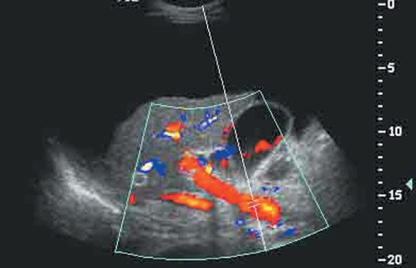
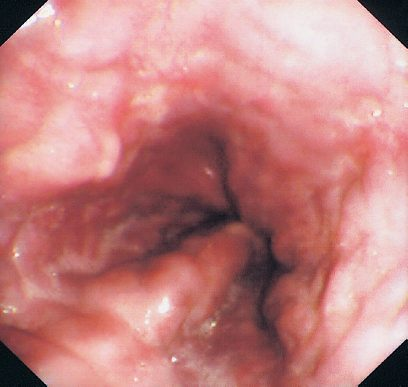

Cirrhosis and Portal Hypertension
Summary
Portal hypertension is a plumbing problem with systemic consequences: raised resistance in the portal system forces blood through collateral channels that were never built to carry it. Normal portal pressure is 5 to 10 mmHg and it is said to be pathological above 12 mmHg [1]; the ABSITE Review puts the threshold for significance at above 10 mmHg [2]. This page covers the causes divided by their level of obstruction, the collateral pathways and what each produces, Child-Pugh and MELD scoring, the management of variceal haemorrhage, and the shunts, including why the non-selective ones were abandoned. Gastro-oesophageal varices bleed in 30% of patients, with a mortality of 50% per episode [1].
Definition
Compensated cirrhosis shows biochemical, radiological and histological findings consistent with cirrhosis but no evidence of portal hypertension or loss of hepatic synthetic function; decompensated cirrhosis shows reduced liver function or hepatocellular failure together with portal hypertension [1].
Portal hypertension occurs as a result of increased resistance in the portal venous system [1].
Budd-Chiari syndrome is occlusion of the hepatic veins or the inferior vena cava [3].
Pathophysiology
Obstruction has three levels, and each has its own causes
Pre-sinusoidal obstruction is caused by schistosomiasis and portal vein thrombosis, the latter accounting for 50% of portal hypertension in children. Sinusoidal obstruction is cirrhosis, alcoholic or viral. Post-sinusoidal obstruction is Budd-Chiari syndrome, constrictive pericarditis and congestive cardiac failure [2].
The Oxford Handbook uses the same three-part division with slightly different labels (pre-hepatic, hepatic and post-hepatic) and adds two more mechanisms: increased portal blood flow, from an arterioportal venous fistula or increased splenic flow [1]. Its hepatic causes are cirrhosis, schistosomiasis as the leading cause globally, and intrahepatic tumours including cholangiocarcinoma and HCC; its post-hepatic causes are Budd-Chiari syndrome secondary to malignancy, haematological disease or the oral contraceptive pill, constrictive pericarditis, and right-sided heart failure [1].
The portal circulation and where it meets the systemic
The portal circulation carries blood from the gastrointestinal tract (distal oesophagus to anorectal junction) to the liver [1]. The stomach, pancreas and portions of the large bowel drain into the splenic vein; the small bowel with parts of the large bowel, stomach and pancreas drain into the superior mesenteric vein; the splenic and superior mesenteric veins merge to form the portal vein, which divides right and left [1].
Three portosystemic anastomoses matter clinically, because each produces a recognisable sign [1][2]:
| Site | Portal side | Systemic side | Result |
|---|---|---|---|
| Lower oesophagus | Left gastric (coronary) and right gastric (pyloric) veins | Oesophageal veins draining to the azygos | Oesophageal varices |
| Umbilicus | Para-umbilical and vestigial umbilical veins in the ligamentum teres | Epigastric veins | Caput medusae |
| Rectum | Superior rectal vein, from the inferior mesenteric | Inferior rectal and pudendal veins | Rectal varices |
The direction of flow reverses. Resistance in the portal veins is normally lower than in the systemic system, so blood flows systemic-to-portal; a rise in portal pressure reverses that flow [1].
Morphology of the cirrhotic liver and the burden of the disease
- Cirrhosis, the final sequela of chronic hepatic insult and the consequence of sustained wound healing, is characterised by fibrous septa subdividing the parenchyma into hepatocellular nodules; morphologically it is micronodular (thick regular septa, small uniform regenerative nodules, virtually every lobule involved), macronodular (septa and nodules of varying size with irregular hepatocytes and large nuclei) or mixed, but the patterns correlate poorly with aetiology and nodule size changes over time [4].
- Irrespective of cause, the cirrhotic liver frequently shows right lobe atrophy, caudate and left lateral segment hypertrophy, recanalisation of the umbilical vein, a nodular contour, a dilated portal vein, gastro-oesophageal varices and splenomegaly on imaging [4].
- About 40% of cirrhotic patients are asymptomatic, but once end-stage liver disease develops, progressive hyperbilirubinaemia, malnutrition, failing synthetic function, coagulopathy, portal hypertension, encephalopathy and life-limiting fatigue, 5-year mortality is 50% with 70% of deaths from liver failure; cirrhosis causes 30,000 US deaths a year, the commonest non-neoplastic cause of death from digestive disease, with a further 10,000–12,000 from hepatocellular carcinoma, the most rapidly increasing neoplasm in the United States [4].
- The portal system contributes about 75% of hepatic blood and 72% of its oxygen, carrying 1000–1500 mL/min in the average adult and considerably more in cirrhosis; the valveless system communicates with systemic veins at the gastro-oesophageal junction, anal canal, falciform ligament, splenic bed and left renal vein, and retroperitoneum (the veins of Retzius and Sappey), and at the normal pressure of 5–10 mmHg very little blood is shunted, but as pressure rises these collaterals dilate and shunt large volumes around the liver [4].
- Gastro-oesophageal varices are supplied mainly by the anterior branch of the left gastric (coronary) vein; anorectal varices occur in about 45% of cirrhotics and must be distinguished from haemorrhoids, which do not communicate with the portal system and are not commoner in portal hypertension; and large spontaneous shunts to the left renal vein or vena cava are ineffective at lowering pressure or preventing variceal bleeding [4].
Clinical features
Portal hypertension leads to oesophageal variceal haemorrhage, ascites, splenomegaly and hepatic encephalopathy [2].
The signs of hepatocellular failure are jaundice, spider naevi, ascites, bruising with coagulopathy and clotting disorders, gynaecomastia and testicular atrophy, encephalopathy, and hepatorenal syndrome [1].
The endoscopic findings extend beyond varices. Ectopic varices are large portosystemic varices occurring anywhere in the abdomen except the gastro-oesophageal region; portal hypertensive gastropathy has a characteristic snake-skin appearance at endoscopy; and gastric antral vascular ectasia is a collection of ectatic vessels in the gastric antrum [1].
Splenomegaly results from congestion of splenic venous drainage and can be associated with thrombocytopenia, leucopenia and anaemia [1].
Budd-Chiari syndrome presents with right upper quadrant pain, hepatosplenomegaly, ascites, fulminant hepatic failure and variceal bleeding, and its risk factor is polycythaemia vera [3].
Physical signs, laboratory pattern and the Budd-Chiari picture
- Spider angiomata and palmar erythema are attributed to altered sex-hormone metabolism, finger clubbing possibly to hypoalbuminaemia, while white nail beds and Dupuytren's contractures are less well explained; men develop gynaecomastia, loss of chest and axillary hair and testicular atrophy, the liver may be enlarged, normal or small, and portal hypertension can produce caput medusae or the Cruveilhier-Baumgarten murmur, a venous hum in the epigastrium from collaterals between the portal system and the umbilical vein remnant [4].
- Jaundice appears above a bilirubin of 2–3 mg/dL, asterixis accompanies encephalopathy, fetor hepaticus and temporal wasting are seen, resting energy expenditure is increased despite reduced fat and muscle, and muscle cramps correlate with ascites, low mean arterial pressure and plasma renin activity [4].
- Cirrhosis raises cardiac output and heart rate while lowering systemic vascular resistance and blood pressure, impaired reticuloendothelial phagocytosis predisposes to infection, bacterial infections of intestinal origin must be suspected in any unexplained pyrexia or deterioration, and spontaneous bacterial peritonitis occurs with ascites, and intrinsic drug metabolism is reduced [4].
- Abdominal hernias are common with ascites and should be repaired electively only in well-compensated cirrhosis, otherwise at or after transplantation, and every cirrhotic should be screened for hepatocellular carcinoma every 6 months by imaging and serum α-fetoprotein [4].
- The typical laboratory picture is a mild normocytic normochromic anaemia, reduced white cell and platelet counts with a macronormoblastic marrow, a prolonged prothrombin time that does not respond to vitamin K, low albumin, urinary urobilinogen, diminished urinary sodium with ascites, and variably raised bilirubin, transaminases and alkaline phosphatase, though normal tests do not exclude cirrhosis [4].
- Clinically significant Budd-Chiari syndrome usually follows obstruction of two or more major hepatic veins, producing hepatomegaly, congestion and right upper quadrant pain with non-inflammatory centrilobular necrosis on biopsy in 70%; acute liver failure is rare but most develop chronic portal hypertension and ascites, and caudate hypertrophy occurs in about 50% because the caudate drains directly to the vena cava, which it may then further obstruct [4].
Etiology
Splenic vein thrombosis produces isolated gastric varices without any rise in pressure elsewhere in the portal system, and those gastric varices can bleed; it is most often caused by pancreatitis, and treatment is splenectomy if symptomatic [5].
Portal vein thrombosis is usually extrahepatic, its risk factor is a hypercoagulable state, and it produces ascites without liver failure [6].
Portal hypertension in children is usually from extrahepatic portal vein thrombosis, and is the most common cause of massive haematemesis in children [2].
Causes of cirrhosis as Schwartz lists them
- Beyond viral hepatitis B, C and D, alcohol, cryptogenic disease and non-alcoholic fatty liver disease, Schwartz lists the metabolic causes (haemochromatosis, Wilson's disease, α1-antitrypsin deficiency, glycogen storage disease types IA, III and IV, tyrosinaemia, galactosaemia), hepatic venous outflow obstruction (Budd-Chiari syndrome, cardiac failure), autoimmune hepatitis, and toxins and drugs [4].
- Alcoholic hepatitis on biopsy shows hepatocyte necrosis, Mallory bodies, neutrophil infiltration and perivenular inflammation, and documentation of chronic alcohol abuse is imperative [4].
- Non-alcoholic fatty liver disease is now the commonest chronic liver disease worldwide; its progressive form, NASH, affects 3–5% of the population, about 1 in 10 progressing to cirrhosis, and although hepatocellular carcinoma arises less often in NASH than in hepatitis C its far greater prevalence means most HCC will soon arise on a background of fatty liver; diagnosis requires steatohepatitis on biopsy, no significant alcohol history and exclusion of other causes, and cryptogenic cirrhosis (once a third of all cases) has declined as unrecognised NASH is identified [4].
- Fatty liver matters to surgeons because it increases morbidity after resection, and irinotecan chemotherapy for colorectal metastases itself induces steatosis and steatohepatitis in the non-tumour-bearing liver [4].
- Chronic hepatitis C is the commonest cause of chronic liver disease and the most frequent indication for transplantation in the United States, diagnosed by antibody and viral RNA assays; chronic hepatitis B is diagnosed by HBsAg persisting beyond 4–6 months with HBeAg and viral DNA confirming replication [4].
- Primary biliary cirrhosis presents with fatigue, pruritus and non-jaundice hyperpigmentation, positive antimitochondrial antibodies in the vast majority, raised cholesterol and late hyperbilirubinaemia; primary sclerosing cholangitis, associated with ulcerative colitis and Crohn's disease, gives pruritus, steatorrhoea, fat-soluble vitamin deficiency and metabolic bone disease with a beaded cholangiogram of multifocal strictures and dilatations, and is complicated by strictures, cholangitis, stones and cholangiocarcinoma; autoimmune hepatitis shows raised gamma globulins and a portal mononuclear infiltrate with plasma cells and often responds to prednisone with or without azathioprine [4].
- Hereditary haemochromatosis, the commonest metabolic cause, is suspected with skin hyperpigmentation, diabetes, pseudogout, cardiomyopathy or a family history, suggested by raised ferritin and iron saturation, and confirmed by genetic testing, biopsy or response to phlebotomy [4].
- Portal hypertension itself is classified as presinusoidal, sinistral or extrahepatic (splenic vein thrombosis, splenomegaly, splenic arteriovenous fistula) or intrahepatic (schistosomiasis, congenital hepatic fibrosis, nodular regenerative hyperplasia, idiopathic portal fibrosis, myeloproliferative disorder, sarcoid, graft-versus-host disease), sinusoidal (cirrhosis of any cause) or postsinusoidal (vascular occlusive disease, Budd-Chiari syndrome, congestive heart failure, caval web, constrictive pericarditis) [4].
- Budd-Chiari syndrome has an incidence of 1 in 100,000, is primary when an endoluminal thrombosis obstructs the veins and secondary when they are compressed or invaded from outside, and one or more thrombotic risk factors are found in 75–90% of primary cases, myeloproliferative disorders such as essential thrombocythaemia and polycythaemia rubra vera in 35–50%, activated protein C resistance (usually factor V Leiden) in about 25%, and anticardiolipin antibodies, hyperhomocysteinaemia and oral contraceptives [4].
Diagnosis
Portal vein pressure is measured indirectly, as the hepatic venous wedge pressure [2].
- The workup for cirrhosis is a screen for cause as much as a measure of severity [1].
- Bloods show a reduced platelet count, reduced sodium, deranged liver function with a low albumin, and a prolonged prothrombin time.
- A hepatitis screen covers A, B, C, D and E plus EBV and CMV.
- A metabolic screen covers haemochromatosis with iron studies, and Wilson's disease with serum copper and a low caeruloplasmin.
- An autoimmune screen covers anti-mitochondrial antibodies for primary biliary cirrhosis, anti-smooth muscle and antinuclear antibodies for autoimmune hepatitis, and plasma alpha-1 antitrypsin with serum protein electrophoresis for alpha-1 antitrypsin deficiency [1].
Abdominal ultrasound shows a small liver, surface nodularity, ascites, portal vein diameter and flow, and splenomegaly [1]. Upper gastrointestinal endoscopy identifies varices and gastropathy, and ultrasound-guided liver biopsy confirms the type, activity and cause [1].
A serum-ascites albumin gradient above 1.1 g/dL indicates portal hypertension [1], the single most useful test on a diagnostic paracentesis.
Budd-Chiari syndrome is diagnosed by angiography with a venous phase or CT angiography, with liver biopsy showing sinusoidal dilatation, congestion and centrilobular congestion [3].

Assessing portal pressure and hepatic reserve
- Portal vein patency and collateral anatomy must be established before shunting, resection or transplantation: ultrasound is the simplest first test (a large portal vein suggests but does not prove portal hypertension), Doppler outlines anatomy, excludes thrombosis, shows flow direction and assesses surgical shunts and TIPS, CT and MR angiography show anatomy and patency, and angiography and portal venography are reserved for cases the non-invasive methods cannot settle [4].
- The most accurate measure is hepatic venography: a balloon catheter in a hepatic vein records the free hepatic venous pressure deflated and the wedged pressure inflated, the hepatic venous pressure gradient (wedged minus free) represents sinusoidal and portal pressure, and clinically significant portal hypertension is present above 10 mmHg [4].
- Biopsy, percutaneous, transjugular or laparoscopic, is occasionally needed to confirm cirrhosis and define aetiology and activity; no serological fibrosis marker is yet accurate enough for clinical use, and ultrasound elastography is promising [4].
- Quantitative tests of hepatic reserve, indocyanine green, sorbitol and galactose elimination, carbon-13 galactose and aminopyrine breath tests, have disappointed because they depend on hepatic blood flow and are complex and unavailable, and the MEGX test (monoethylglycinexylidide formation after lidocaine) is about 80% sensitive and specific for cirrhosis but loses accuracy as bilirubin rises and interferes with the fluorescent readout [4].
- In Budd-Chiari syndrome ultrasound is the first investigation, showing absent hepatic vein flow, "spider-web" veins and collaterals, CT and MRI show thrombosis and the cava but not flow direction, and hepatic venography with caval pressure measurement is definitive [4].
Thresholds and severity
Portal pressure: normal 5 to 10 mmHg, pathological above 12 mmHg [1]; a portal vein pressure above 10 mmHg is considered significant [2].
The Child-Pugh score [2]:
| Variable | 1 point | 2 points | 3 points |
|---|---|---|---|
| Albumin (g/dL) | above 3.5 | 3–3.5 | below 3.0 |
| Bilirubin (mg/dL) | below 2.5 | 2.5–4 | above 4 |
| INR | below 1.7 | 1.7–2.3 | above 2.3 |
| Ascites | None | Treatable with medication | Refractory |
| Encephalopathy | None | Minimal | Severe |
Class A is 5 to 6 points, class B 7 to 9, and class C 10 to 15 [1].
The score predicts mortality after open shunt placement: 2% for Child's A, 10% for Child's B, and 50% for Child's C [2].
The MELD score uses INR, creatinine and total bilirubin to grade liver failure and is often preferred to Child's; a MELD of 15 or above is needed to gain a survival benefit from liver transplantation [2].
Thrombocytopenia from hypersplenism is treated if the platelet count is below 50 × 10⁹/L [8].
UK management of variceal bleeding is a resuscitation protocol before it is an endoscopic one. Large-bore peripheral cannulae are placed and resuscitation commenced, ideally with blood [8]. Hypervolaemia may increase portal pressure and exacerbate bleeding, over-transfusion is itself a hazard [8].
Ten milligrams of vitamin K are given intravenously, but an established coagulopathy requires fresh frozen plasma and activation of a major transfusion protocol [8].
Treatment protocols use splanchnic vasoconstrictors (terlipressin, octreotide or somatostatin) together with prophylactic antibiotics [8]. Where bleeding continues the options are sclerotherapy, banding, balloon tamponade and TIPSS [8].
Two points are easily missed. Endoscopy should confirm the diagnosis as soon as the patient is haemodynamically stable, because 30% will have a non-variceal source of bleeding [8]. And variceal bleeding is often associated with hepatic encephalopathy, so endotracheal intubation may be required before endoscopy to protect the airway and prevent aspiration [8].
Band ligation has replaced sclerotherapy in management [8]. Beta-blockade with propranolol reduces portal venous pressure, and rectal varices are treated by injection sclerotherapy [1].
Ascites is managed with sodium restriction and diuretics (spironolactone with or without furosemide) with paracentesis and albumin replacement for tense symptomatic ascites [1]. Encephalopathy is managed by reducing nitrogen absorption: dietary protein restriction, oral lactulose, and oral antibiotics such as rifaximin [1].
Operative risk by Child-Turcotte-Pugh and MELD
- Emergency operations, cardiac surgery, hepatic resection and abdominal surgery (particularly cholecystectomy, gastric resection and colectomy) carry the highest risk in cirrhotics, as do anaemia, ascites, encephalopathy, malnutrition, hypoalbuminaemia, hypoxaemia, infection, jaundice, portal hypertension and a prolonged prothrombin time; non-transplant surgery is contraindicated in acute fulminant hepatitis and severe decompensated chronic hepatitis [4].
- The Child-Turcotte-Pugh score, originally devised for portocaval shunt risk, predicts overall surgical mortality of 10% in class A, 30% in class B and 75–80% in class C, its weaknesses being the subjective variables (encephalopathy and ascites), the narrow 5–15 range and equal weighting of every variable; Schwartz's version scores bilirubin (<2, 2–3, >3 mg/dL), albumin (>3.5, 2.8–3.5, <2.8 g/dL), INR (<1.7, 1.7–2.2, >2.2), encephalopathy and ascites (none, controlled, uncontrolled), with class A 5–6, B 7–9 and C 10–15 points [4].
- MELD, a regression model on three objective values, MELD = 9.57 ln(creatinine) + 3.78 ln(bilirubin) + 11.2 ln(INR) + 6.43, with creatinine and bilirubin in mg/dL, was devised to predict mortality after TIPS and has been the sole basis of US transplant allocation since 2002; Northup found it the only significant predictor of 30-day mortality after non-transplant surgery, mortality rising about 1% per point up to 20 and 2% per point above 20, and in another comparison the relative risk rose 14% per point, so that elective surgery is considered safe below a MELD of 10, cautious between 10 and 15, and inadvisable above 15 [4].
- About 30% of compensated and 60% of decompensated cirrhotics have oesophageal varices, a third of those with varices bleed, each bleed carries 20–30% mortality, and untreated survivors have a 70% chance of rebleeding within 2 years [4].
Treatment and Management
Treatment of cirrhosis itself is directed at removing the cause or preventing progression: abstinence from alcohol, avoidance of hepatotoxic drugs including NSAIDs and high-dose paracetamol, interferon for hepatitis B, oral antivirals for hepatitis C, immunosuppression for autoimmune causes, and ursodeoxycholic acid for primary biliary cirrhosis [1]. Decompensated hepatocellular failure is an indication for liver transplantation [1].
Portal vein thrombosis is treated with heparin if the thrombosis is acute (avoided if there is upper gastrointestinal bleeding) and may eventually need a shunt [6].
Budd-Chiari syndrome is treated with a portacaval shunt, which must connect to the IVC above the obstruction; catheter-directed tPA can be tried if the presentation is acute [3].
Symptomatic splenomegaly is treated by laparoscopic or open splenectomy [1].
Prophylaxis and the acute bleed in Schwartz's sequence
- Non-selective β-blockers (propranolol, nadolol) reduce the index variceal bleed by about 45% and bleeding mortality by 50% in meta-analyses, but about 20% of patients do not respond and another 20% cannot tolerate them; prophylactic band ligation lowers the incidence of a first bleed and is recommended for medium-to-large varices every 1–2 weeks until obliteration, with endoscopy 1–3 months later and surveillance every 6 months [4].
- Acute haemorrhage is managed in intensive care with careful transfusion to a haemoglobin of about 8 g/dL, since over-replacement of blood and saline causes rebleeding and higher mortality; fresh frozen plasma and platelets may be considered in severe coagulopathy, recombinant factor VIIa is not recommended, and short-term prophylactic antibiotics such as ceftriaxone 1 g/day reduce infection and improve survival, spontaneous bacterial peritonitis accounting for about half of the infections and urinary infection and pneumonia for the rest [4].
- Vasopressin is the most potent vasoconstrictor but its systemic effects (hypertension, myocardial ischaemia, arrhythmia, ischaemic abdominal pain and limb gangrene) limit it, so octreotide, which can be given for 5 days or longer, is the preferred initial agent, and combining it with band ligation as soon as possible improves initial control and 5-day haemostasis [4].
- Patients with cirrhosis and variceal bleeding usually die of hepatic failure rather than blood loss, so transplantation must be considered in end-stage disease and for bleeding refractory to everything else; previous banding, TIPS, splenorenal or mesocaval shunts do not worsen transplant survival, but a previous Eck fistula makes transplantation much harder and should be avoided in candidates [4].
- Budd-Chiari syndrome is treated first by managing the underlying disorder and systemic anticoagulation to prevent extension of thrombus, with portal hypertension and ascites managed as in cirrhosis; angioplasty and TIPS with thrombolysis are the preferred means of restoring outflow (thrombolysis alone may be tried for acute thrombosis), the side-to-side portocaval shunt turns the portal vein into an outflow tract and improves function and fibrosis at 1 year in most without significant encephalopathy but carries relatively high operative mortality and shunt dysfunction, and progressive disease ends in transplantation [4].
Procedural interventions
Balloon tamponade
Balloon tamponade is effective for massive or refractory variceal bleeding but is only recommended as a bridge to definitive treatment [8]. Where the rate of blood loss prevents endoscopic evaluation, a Sengstaken-Blakemore tube (or a Minnesota tube, which adds an oesophageal aspiration port) provides temporary haemostasis [8].
The gastric balloon is inflated with 300 mL of air and retracted to the gastric fundus, the oesophagogastric varices are then tamponaded by inflating the oesophageal balloon, and the position is confirmed radiologically [8]. A strict protocol is important to avoid oesophageal pressure necrosis [8]. The use of oesophageal balloons should be avoided where experienced endoscopists are available [8].
Self-expanding covered metal oesophageal stents have been used for emergency treatment of oesophageal varices, with results equivalent to balloon tamponade unless the bleeding site is intragastric [8].

TIPS
TIPS allows antegrade flow from the portal vein to the IVC and is used for protracted bleeding, progression of coagulopathy, visceral hypoperfusion, refractory ascites or refractory hydrothorax [2]. The complication of TIPS is the development of encephalopathy [2].
Surgical shunts
The splenorenal shunt is a selective shunt with a low rate of encephalopathy. It requires ligation of the left adrenal vein, left gonadal vein, inferior mesenteric vein, coronary vein and the pancreatic branches of the splenic vein, but does not require splenectomy [2]. It is used only for Child's A cirrhotics presenting with bleeding alone, and is contraindicated where ascites is refractory, because it can worsen ascites [2].
The partial portosystemic shunt is also selective, calibrated by the size of graft used, and uses an interposition graft between the portal vein and the IVC; it is used where TIPS is not available and refractory ascites is the problem [2].
Non-selective shunts are not used any more, because of the high rate of encephalopathy [2].
Choosing between them turns on Child class: Child's B or C with an indication for a shunt goes to TIPS; Child's A whose only symptom is bleeding may be considered for a splenorenal shunt, which is more durable, and otherwise TIPS [2].
Tamponade limits, TIPS, BRTO and the shunt operations
- Balloon tamponade controls refractory bleeding in up to 90% but risks aspiration, airway obstruction and oesophageal perforation from over-inflation or pressure necrosis, so a Sengstaken-Blakemore tube should not stay longer than 36 hours and is only a bridge [4].
- TIPS implants a metallic stent between an intrahepatic portal branch and a hepatic vein radicle, dilating the track until the portal gradient is 12 mmHg or less; it succeeds in 95% of patients in experienced hands, controls refractory bleeding in over 90%, and should not compromise later transplantation, but causes encephalopathy in 25–30%, with bleeding, infection, renal failure and reduced hepatic function as other complications, and a high thrombosis rate from intimal hyperplasia demands frequent surveillance with dilatation or re-stenting [4].
- Balloon-occluded retrograde transvenous obliteration treats bleeding gastric varices when cross-sectional imaging shows a spontaneous gastrorenal or splenorenal shunt: a balloon catheter passed transjugularly or transfemorally through the left renal vein occludes the shunt, which is sclerosed, preserving portal flow and reducing encephalopathy relative to TIPS, at the theoretical cost of worsening portal hypertension, oesophageal varices and ascites [4].
- Surgical shunts are now considered only for patients with a MELD below 15 who are not transplant candidates or lack access to TIPS and its follow-up, aiming to lower portal pressure while maintaining hepatic and portal flow and avoiding encephalopathy, with survival determined by hepatic reserve [4].
- Eck's portacaval shunt of 1877, end-to-side (abolishing portal flow) or side-to-side (partially preserving it), is now rarely performed because of encephalopathy, deteriorating function and the technical difficulty it adds to transplantation; the mesocaval shunt uses an 8- or 10-mm PTFE graft from the superior mesenteric vein to the cava, is technically easier, is simply ligated at transplantation and, being small-calibre, spares hepatic function, though small-diameter shunts trade less encephalopathy for more thrombosis and rebleeding [4].
- The distal splenorenal (Warren) shunt, the one most often used and technically the hardest, divides the gastro-oesophageal collaterals so that the stomach and lower oesophagus drain through the short gastric veins into the spleen and thence by an end-to-side splenic-to-left-renal anastomosis, giving less encephalopathy and decompensation without interfering with transplantation [4].
- For extrahepatic portal vein thrombosis with refractory bleeding the Sugiura procedure, extensive devascularisation of the stomach and distal oesophagus, oesophageal transection, splenectomy, truncal vagotomy and pyloroplasty, may be considered, with survival again dependent on hepatic reserve and limited Western experience [4].
Complications
Gastro-oesophageal varices bleed in 30% of patients, with a mortality of 50% per episode, and the bleeding can be catastrophic because patients often have a concomitant coagulopathy from the underlying liver disease [1].
Cirrhotic portal hypertension accounts for around 75% of patients with ascites, and those patients are prone to spontaneous bacterial peritonitis [1].
The remaining complications of raised portal pressure are hepatorenal syndrome, hepatic encephalopathy and splenomegaly with its cytopenias [1].
Encephalopathy is also the complication of the treatment: it is the recognised complication of TIPS, and the reason non-selective surgical shunts were abandoned [2].
Outcomes
Child-Pugh class predicts operative mortality directly, 2%, 10% and 50% for classes A, B and C respectively after open shunt placement [2], which is why the score is calculated before any shunt is contemplated.
A MELD of 15 or above is the threshold at which liver transplantation confers a survival benefit over medical therapy [2].
Variceal haemorrhage carries a 50% mortality per bleeding episode [1], and 30% of patients presenting with what looks like variceal bleeding turn out to be bleeding from somewhere else [8], which is the argument for endoscopy as soon as the patient can tolerate it.
References
- Oxford Handbook of Clinical Surgery, 5th ed., Ch. 9 Liver, pancreatic, and biliary surgery
- The ABSITE Review, 2022, Portal hypertension
- The ABSITE Review, 2022, Budd-Chiari syndrome
- Schwartz's Principles of Surgery, 11th ed., Ch. 31, Fig. 31-14
- The ABSITE Review, 2022, Splenic vein thrombosis
- The ABSITE Review, 2022, Portal vein thrombosis
- Bailey & Love's Short Practice of Surgery, 28th ed., Ch. 8 Diagnostic imaging
- Bailey & Love's Short Practice of Surgery, 28th ed., Ch. 69 The liver
- Bailey & Love's Short Practice of Surgery, 28th ed., Ch. 9 Gastrointestinal endoscopy